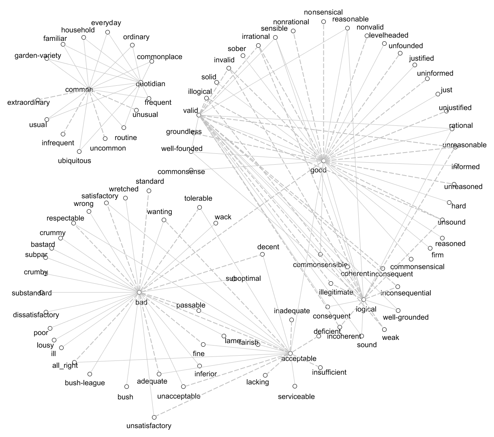

Test-repo
This my first repository. A test repository.
Table of Contents
1. Introduction
{kind=link}


This is an implementation in Java of the polarity propagation algorithm
described on [1], section "3. The Polarity Propagation Algorithm",
for classifying words, multiwords and synsets as positive, negative and
neutral based on an undirected graph.
This implementation also allows running the algorithm described on [2],
section "2.3 Simple and Intuitive Polarity Propagation - Algorithm",
for classifying words as positive or negative based on a direted graph.
In both algorithms, the goal is to start with a small set of words, multiwords
or synsets manually classified, and automatically classify a bigger set of words as
positive, negative or even neutral.
The set of words produced by these algorithms, may be useful, for example,
for building a dictionary of sentiment words for Sentiment Analysis / Opinion Mining.
Introductory Example
This example tries to explain the goal, the input, and output of the mentioned algorithms.
Suppose that our goal is to classify a set of words as positive, negative and
neutral with a few effort.
-
First, we can collect the words that we want to classify automatically, together with their synonyms and antonyms. We can collect this information from a dictionary, thesaurus or wordnet.
For this example, we collected a few words from online dictionaries. These words are saved in the file examples/01-tiny-graph-english/graph-edges-utf8.txt and are shown on the following figure as an undirect graph. In this graph, a dashed line represents an antonym and a solid line represents a synonym. Note that this graph is a disconnected graph.

-
Second, we need to manually classify a set of words.
For this example, we have classified the words good as
positive, bad asnegative, and common asneutral. These words are saved on the file examples/01-tiny-graph-english/seed-words-utf8.csv and are shown in the following figure with a different color.

- Finally, the polarity propagation algorithm can be applied to classify the words not yet classified. The result of this step is shown in the following graph.

As result, we got a list of words classified as positive (green nodes),
negative (red nodes), neutral (gray nodes), as shown on the above figure.
This list of words is also available in the file examples/01-tiny-graph-english/dic-output.csv.
Some observations:
- In some cases we can end up with words classified also as
ambiguous(words with more than one polarity at same time) andunknown(words with polarity not set). The latter happens with all nodes that are not connected to a classified node.
1.1 Requirements & Download
1.1.1 Download
The binary files can be downloaded by clicking on the link release
at the top of this page. The application run on Windows/Linux/Mac OS and so on
(see the requirements in the next section).
1.1.2 Requirements
If you downloaded the binary files you just need to have installed:
-
JRE (Java Runtime Environmen) 1.6or higher; - Or
JDK (Java Development Kit)1.6 or higher.
If you downloaded the source code, you also need to download and set on your project:
- The
jgrapht-core-0.9.0.jarfile from http://jgrapht.org/.
2. Running the Application
This implementation can be run from a gui (graphical user interface), command line and through a Java API. In all cases it is required as input:
-
A set of seed items. This is an initial set of words, multiwords, or synsets
classified as
positiveandnegative(and optionally asneutral); - A set of relations between items. This is set of synonyms and antonymys (optional) words, multiwords or synsets that we want to classify. These relations are used to build a graph.
The implementation will output:
- A list of items, each one classified as
positive,negative,neutral,ambiguous(item with more than one polarity), andunknown(item with polarity not set).
2.1 GUI (Graphical User Interface)
The application can run from the next Graphical User Interface.

For running the application, click on the button Run Algorithm after specifying at least:
- A seed words file like the [examples/01-tiny-graph-english/seed-words-utf8.csv] file.
- A graph file like the examples/01-tiny-graph-english/graph-edges-utf8.txt file.
For opening the graphical user interface (GUI) double click in the polarity-propagation-X.X.X.jar
(X.X.X stands for the number version) jar file.
If the double click didn't work on your Operating System, open a command line/terminal and type:
java -jar polarity-propagation-X.X.X.jar
(X.X.X must be replaced by the application version that you are trying to run)
2.2 Running in Command Line
The application can be run from the command line, by running:
java -jar <path-to-the-application-jar> {mandatory-options} [optional-options]
Options:
| Option | Type | Description |
|---|---|---|
| -h | optional | help |
| -s <file_name> | mandatory | Seed words file. |
| -g <file_name> | mandatory | Graph file. Load it as an undirected graph. |
| -u <file_name> | mandatory | Same as -g |
| -d <file_name> | mandatory | Graph file. Load it as a directed graph. |
| -o <file_name> | optional | Output file. |
| -e encoding | optional | Caracter encoding of all the files. |
NOTE: options -g, -u and -s are are mutually exclusive. Specify just one.
Example
This example, shows how to reproduce the previous example in the command line, to
classify a set of words as positive, negative and neutral.
- First, we create a file with the word good classified as
positive, bad classified asnegative, and the word common classified asneutral. This file is available at examples/01-tiny-graph-english/seed-words-utf8.csv and its content is shown below:
good,1
bad,-1
common,0
- Then, we create a file of graph edges. A sample of this file is shown below. The full file is available at examples/01-tiny-graph-english/graph-edges-utf8.txt.
good SYN firm
good SYN hard
good SYN informed
good SYN just
good ANT bad
bad SYN bastard
bad SYN bush
bad SYN bush-league
bad SYN crummy
(...)
- Finally, we run the following command line:
java -jar polarity-propagation-0.6.0.jar -s "examples/01-tiny-graph-english/seed-words-utf8.csv" -g "examples/01-tiny-graph-english/graph-edges-utf8.txt" -e "utf-8" -o "examples/01-tiny-graph-english/dic-output.csv"
The result of the above command is a list of words classified with their polarity. This list of words is saved as examples/01-tiny-graph-english/dic-output.csv. A sample of the outputted csv file, is the following:
words,polarity,negativeCounter,neutralCounter,positiveCounter,iteration
good,+,0,0,1,0
commonsense,+,1,0,0,1
commonsensible,+,0,0,1,1
commonsensical,+,0,0,1,1
firm,+,0,0,1,1
hard,+,0,0,1,1
(...)
well-founded,+,0,0,3,1
groundless,-,1,0,0,1
illogical,-,3,0,0,1
invalid,-,3,0,0,1
irrational,-,3,0,0,1
(...)
weak,-,2,0,0,2
fairish,+,0,0,1,2
serviceable,+,0,0,1,2
deficient,-,1,0,0,2
inadequate,-,1,0,0,2
insufficient,-,1,0,0,2
lacking,-,1,0,0,2
2.3 Running through the Java API
The application can be called through the Java API. The previous example and previous command line can be reproduced by the following Java code:
// Read the graph from a file
TriplesLoader loader = new TriplesLoader();
SimpleGraph<Word, LexicalRelation> initialGraph
= loader.load(
new File("examples/01-tiny-graph-english/graph-edges-utf8.txt")
, "utf-8");
// Read the seed words from a file
SeedWordsLoader seedWordsLoader = new SeedWordsLoader();
List<Word> seedWords = seedWordsLoader.load(
new File("examples/01-tiny-graph-english/seed-words-utf8.csv")
, "utf-8");
// Propagate the polarity from the seed words to the remaining words
SimpleGraph<Word, LexicalRelation> finalGraph =
PolarityPropagation.propagate(initialGraph, seedWords);
// Write the list of words to a csv file
CsvOutput csv = new CsvOutput(new File("examples/01-tiny-graph-english/dic-output.csv"));
csv.write(finalGraph);
3. Other Examples
These examples shown in the next subsections run from Java code. They are available in the package pt.psantos.phd.polarity.propagation.examples.
3.1 ExampleTinyDirectedGraph.java
The ExampleTinyDirectedGraph.java file implements the example described in [1], on section 2.3 Intuitive and Simple Polarity Propagation - Algorithm.

This example shows how to propagate the positive and negative polarity of
A and B over a tiny directed graph of synonyms and antonymys.
- Starting with (graph shown on the initial state):
- A directed graph;
-
Aclassified aspositiveandBclassified asnegative.
- Applying the propagation algorithm.
- We got the graph shown in the figure on its final state. In the final graph:
-
A, C, Fare classified aspositive; -
B, E, H, Iare classified asnegative; -
D, Gare classified asambiguous(they are simultaneouslypositiveandnegative).
-
3.2 ExampleTinyUndirectedGraph.java
The ExampleTinyUndirectedGraph file implements the example described in [2], on section 3 The Polarity Propagation Algorithm.

This example shows how to propagate the positive, negative and neutral
polarity over a tiny undirected graph of synonyms. This graph is shown below.
- Starting with (graph shown on the initial state):
-
0, 1and2classified aspositive,negativeandneutralrespectively (graph shown on the initial state).
-
- Applying the propagation algorithm.
- We got the graph shown in the figure on its final state. In the final graph:
-
0, 6, 8, 9, 10are classified aspositive; -
1, 4are classified asnegative; -
2, 3are classified asneutral; -
5, 7are classified asambiguous(they are simultaneously positive and negative); -
11, 12end up withno polarity.
-
3.3 ExamplePapel.java
This example shows how to create an undirect graph of synonyms for Portuguese adjectives from PAPEL.
The full Java code to reproduce this is example is available on ExamplePapel.
References
Santos, A. P., Gonçalo Oliveira, H., Ramos, C., & Marques, N. C. (2012). A Bootstrapping Algorithm for Learning the Polarity of Words. In Proceedings of 10th International Conference - Computational Processing of the Portuguese Language (PROPOR 2012), volume 7243 of LNCS, pp. 229-234. Coimbra, Portugal. Springer.
Santos, A. P., Ramos, C., & Marques, N. C. (2011). Determining the Polarity of Words through a Common Online Dictionary. In Proceedings of 15th Portuguese Conference on Artificial on Artificial intelligence (EPIA 2011), volume 7026 of LNCS, pp. 649-663. Lisbon, Portugal. Springer.